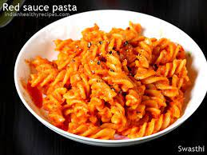
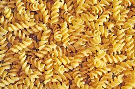
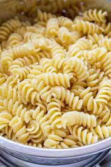
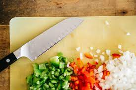
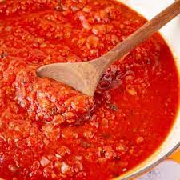
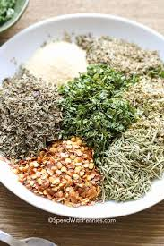

PASTA
Video Link


Ingredients
- Water
- Olive Oil
- Salt
- Herbs
- Spices
- Pasta Sauce
- Vegetables(as per coice)
- PASTA(uncooked)
Quantity
| Ingredient |
Quantity |
| Water |
500ml |
| Olive Oil |
2 table spoon |
| Pasta |
250gm |
| Pasta Sauce |
100ml |
| Vegetables |
As per liking |
| Herbs & Spices |
As per liking |
Prepration
- Boil the uncooked pasta
- In an open pot add salt and uncooked pasta to boiling water, cook until it becomes soft

- Drain the water
- From the boiled pasta pot, drain all the excess water

- Saughte the Vegetables
- Chop the Vegetablesand add the chopped veggies to an open pan with 1 tbspoon olive oil

- Add Pasta Sauce
- Pour Pasta Sauce into the pan with the veggies

- Herbs and Spices
- Add herbs and spices of your liking to the pasta sauce

- Add PASTA
- Finally, add the boiled pasta and mix well!
- Serve
- The pasta is now ready, Serve Hot!